Wireframes e Protótipos
Com base nas necessidades específicas levantadas, e nos requisitos detalhados, geramos ideias para representar a solução visualmente, buscando descrever todos os elementos presentes da maneira mais simples possível. Este processo visa criar uma interface inicial que demonstre a funcionalidade chave do sistema.
Wireframes:
| 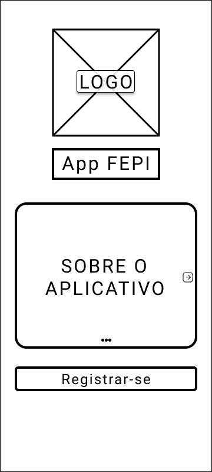 | 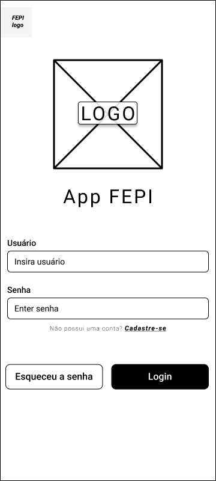 | 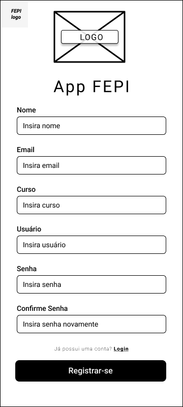 |
|---|---|---|
| 1.Tela Inicial | 2.Tela de Login | 3.Tela de Cadastro |
| 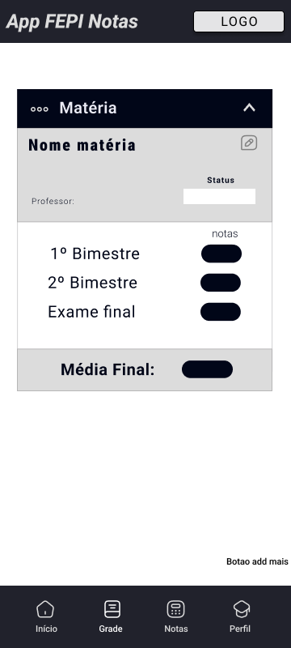 | 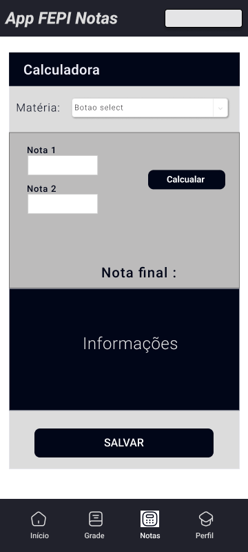 | |
| 4.Tela Disciplinas | 5.Tela de Calculo notas |
Protótipos:
Os protótipos apresentados a seguir representam as principais telas do sistema, demonstrando a interação do usuário e a lógica de navegação. Eles foram projetados para serem interativos, permitindo aos usuários explorar os diferentes fluxos de trabalho e fornecer feedback sobre a experiência. Com essas representações, esperamos que o sistema possa ser implementado com sucesso, atendendo aos requisitos funcionais definidos. Apresentamos então uma visão geral da prototipação que foi feita utilizando a ferramenta do Figma para sua criação e considerando todos os itens previamente estabelecidos.
| 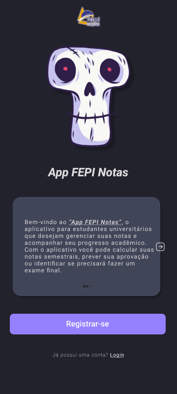 | 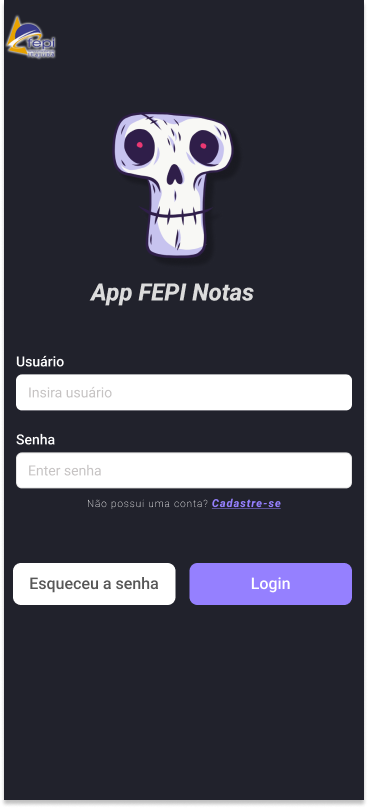 | 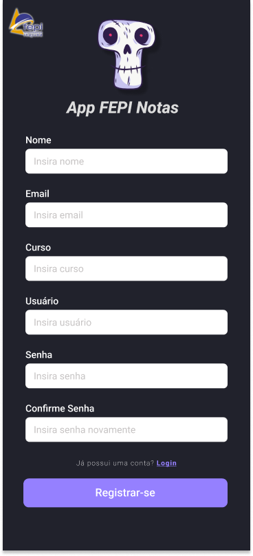 |
|---|---|---|
| 1.Gif Tela Inicial Apresentação | 2.Tela de Login | 3.Tela de Cadastro |
| 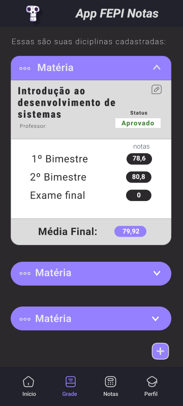 | 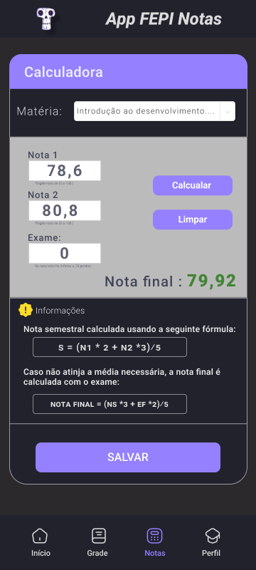 | 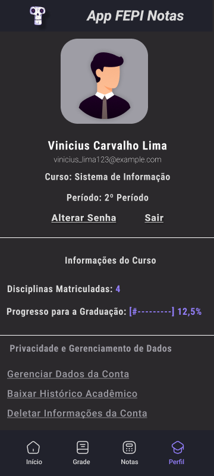 |
| 1.Tela Visualizar Disciplinas | 2.Tela de Cálculo Notas | 3.Tela Perfil Aluno |
Os protótipos fornecem uma visão valiosa de como o sistema será em termos de usabilidade e funcionalidade.Convidamos todos a explorar os protótipos e compartilhar suas opiniões para ajudar a construir um sistema mais eficaz e amigável. Acesso aos Protótipos no Figma